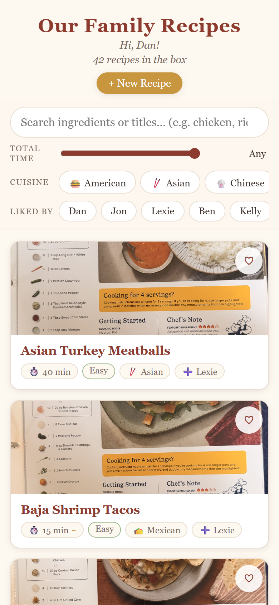
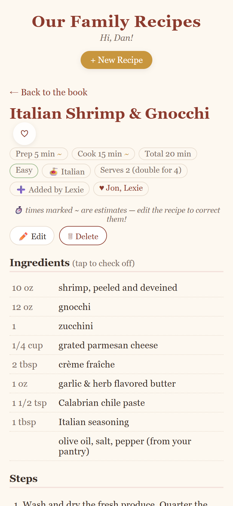
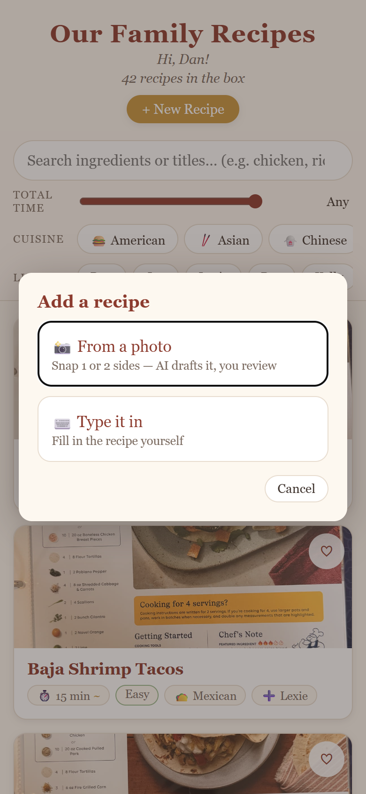
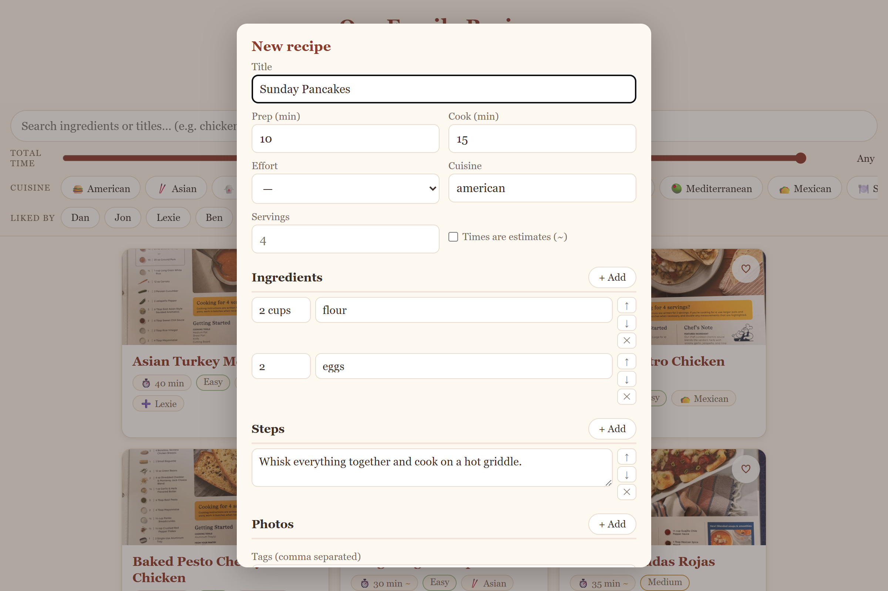

Case study · personal project · 2026
Dozens of family recipes became a private, live, multi-user web app my family, mostly used mobilly, running entirely on free-tier infrastructure, with AI turning a photo of a handwritten card into a structured, editable recipe in seconds.




Screenshots use mock data, the real app is private to my family, which is the point. The live app sits behind Cloudflare Access: family members sign in with one tap via Google against an explicit email allow-list.
family phones ──▶ recipes.<family-domain>.com (Cloudflare DNS, proxied)
│ Cloudflare Access via Google SSO, email allow-list, JWT per request
├─ static PWA shell ← Cloudflare Pages (vanilla JS, no framework)
└─ /api/* ← Pages Function (one file)
├─ recipes CRUD → D1 · versioned edits · soft delete
├─ likes → D1 · per-user, drives "liked-by" filters
├─ photo store/serve → R2 · gated, private
└─ /api/transcribe → Claude Haiku vision · photo → structured draft
Visit the live app (restricted access, you'll meet the Access wall unless I have granted you access) · Back to danhecker.com